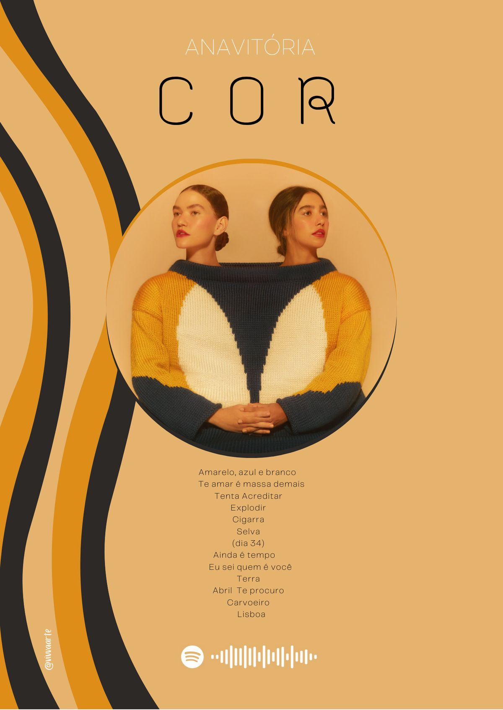

A turnê “Cor” da dupla Anavitória marcou uma fase mais madura e intensa da carreira delas. Inspirada no álbum Cor, a turnê trouxe apresentações cheias de emoção, com letras profundas sobre amor, autoconhecimento e mudanças. No palco, a dupla apostou em uma estética mais sensível e minimalista, destacando a conexão com o público. Foi um momento importante de crescimento artístico, mostrando um lado mais introspectivo e verdadeiro das cantoras.